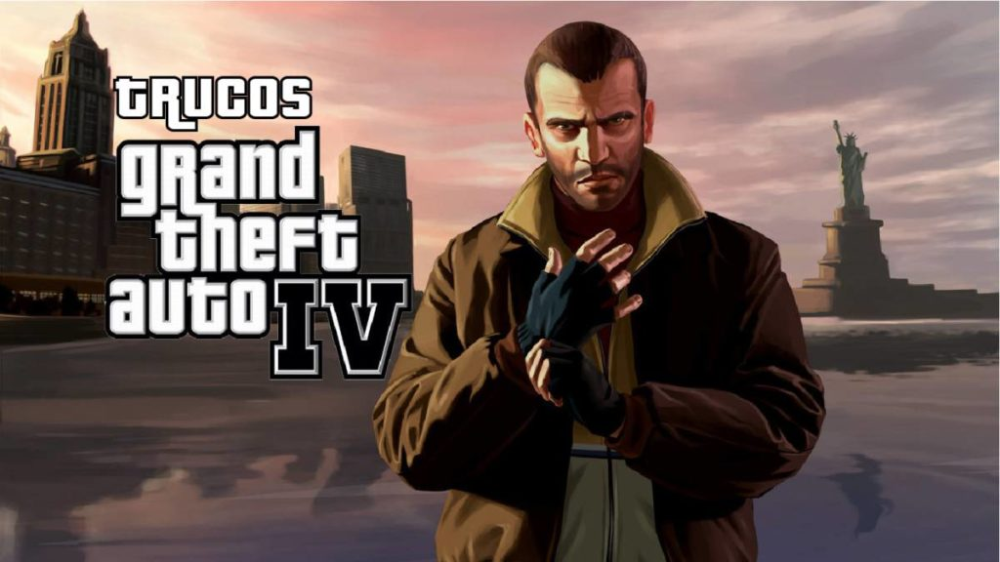
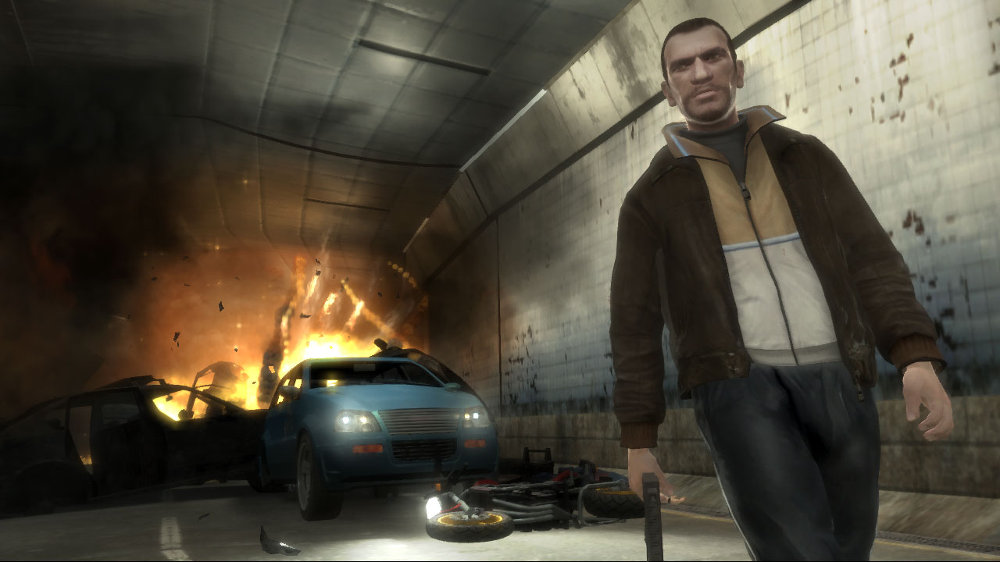
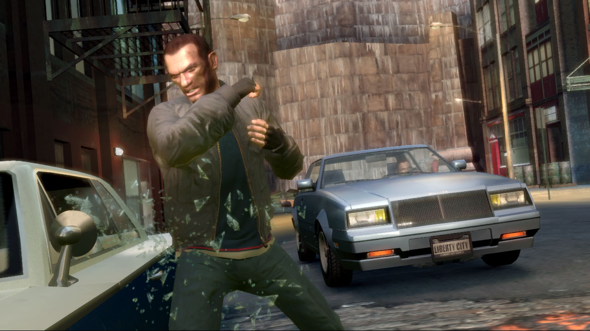
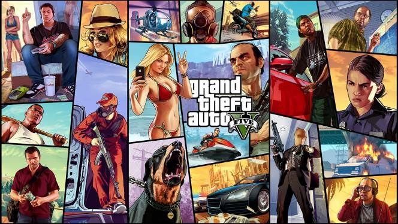
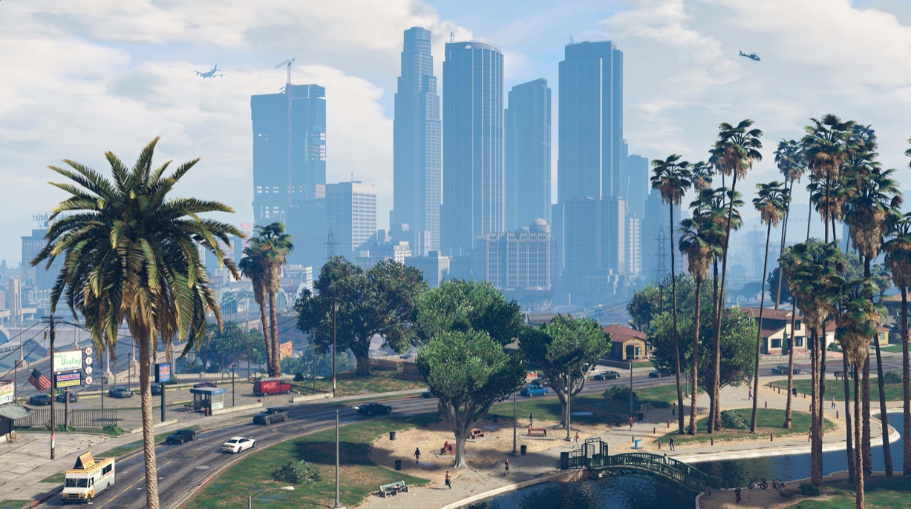

Grand Theft Auto HD (IV, V)
Desde su inauguración en 1997, Grand Theft Auto (GTA) de Rockstar Games ha redefinido el género de los videojuegos de mundo abierto, ofreciendo a los jugadores una experiencia inigualable de crimen, acción y libertad en un entorno virtual expansivo. La serie ha evolucionado constantemente, estableciendo nuevos estándares en cuanto a narrativa, jugabilidad y atención al detalle.
Grand Theft Auto IV (GTA IV) - 2008: La Inmersión en Liberty City
Lanzado en 2008, Grand Theft Auto IV llevó la serie a nuevas alturas al ofrecer una experiencia más realista y centrada en la narrativa. Desarrollado por Rockstar North, el juego se ambienta en Liberty City, una versión ficticia de Nueva York, y sigue la historia de Niko Bellic, un inmigrante de Europa del Este en busca del sueño americano.

GTA IV se destacó por su narrativa madura y compleja, explorando temas como la inmigración, la traición y el sueño americano. El protagonista, Niko, es un personaje complejo con una historia de fondo intrigante. La jugabilidad mejorada, los gráficos de alta calidad y la atención al detalle en el diseño del mundo abierto contribuyeron a la inmersión del jugador.

El juego introdujo el motor RAGE (Rockstar Advanced Game Engine), que permitió una representación visual más realista y un sistema de física mejorado. Además, GTA IV presentó el sistema de elección moral, donde las decisiones de los jugadores afectaban el desarrollo de la historia.

Grand Theft Auto V (GTA V) - 2013: La Epopeya de Los Santos
Grand Theft Auto V, lanzado en 2013, elevó la franquicia a nuevas alturas en términos de escala, diversidad y complejidad narrativa. Ambientado en la ficticia ciudad de Los Santos, una reinterpretación de Los Ángeles, el juego sigue las vidas entrelazadas de tres protagonistas: Michael, un ladrón retirado; Franklin, un joven ambicioso; y Trevor, un psicópata impredecible.

GTA V expandió enormemente el concepto de mundo abierto, presentando un entorno inmenso y variado que incluía la ciudad, suburbios, montañas y hasta el fondo del océano. El juego introdujo el modo Director, que permitía a los jugadores cambiar entre los tres personajes de manera fluida y participar en misiones simultáneamente, ofreciendo una experiencia narrativa más dinámica.
La historia de GTA V exploró temas como la codicia, la corrupción y la disfunción familiar, manteniendo la calidad narrativa característica de la serie. La jugabilidad se refinó aún más, con mejoras en la mecánica de conducción, combate y actividades secundarias. GTA Online, la modalidad multijugador en línea, también debutó con GTA V, permitiendo a los jugadores explorar Los Santos juntos, participar en actividades y competir en desafíos en línea.

GTA V se convirtió en uno de los videojuegos más exitosos de la historia, gracias a su combinación de narrativa cautivadora, jugabilidad pulida y un mundo abierto lleno de posibilidades. La atención al detalle, la riqueza de contenido y las actualizaciones continuas han mantenido a GTA V relevante y popular incluso años después de su lanzamiento inicial.